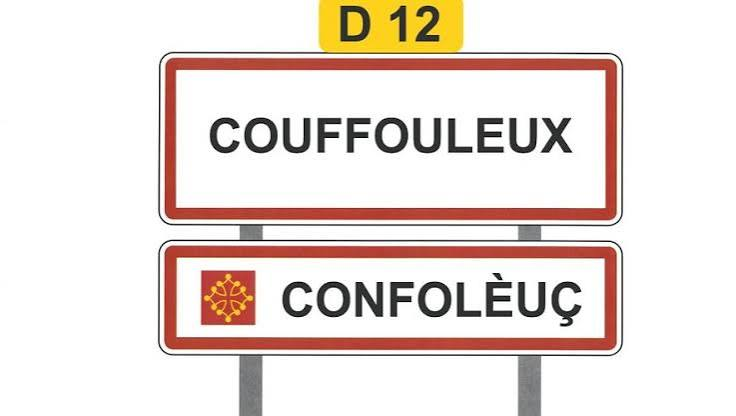

Toponymie
Occitane


⟹ Langue & Patrimoine des noms de lieux ⟸
La toponymie occitane étudie l'origine et la formation des noms de lieux dans les territoires de langue d'oc, dont le Tarn constitue un terrain particulièrement riche. Ces noms superposent plusieurs strates historiques : un fond pré-latin parfois très ancien, un apport gallo-romain massif, puis des formations proprement occitanes forgées au Moyen Âge et conservées jusqu'à aujourd'hui, souvent francisées dans leur orthographe officielle.

De nombreux noms de communes tarnaises dérivent d'un nom de personne gallo-romain suivi du suffixe « -acum », devenu « -ac » en occitan : c'est le cas de très nombreux villages du département. D'autres toponymes renvoient directement à la géographie du lieu — relief, cours d'eau, végétation — dans un vocabulaire occitan resté transparent pour qui connaît la langue.
L'étude de ces noms permet de reconstituer d'anciens paysages, des activités disparues ou des peuplements successifs, la toponymie fonctionnant comme une mémoire linguistique déposée sur la carte, souvent plus ancienne que les documents écrits eux-mêmes.
Depuis quelques décennies, chercheurs et associations occitanes travaillent à recenser et faire connaître cette richesse, à travers des dictionnaires toponymiques, des cartes anciennes et des panneaux bilingues installés à l'entrée de certains villages.
Hydronymes : noms liés aux cours d'eau et sources, souvent parmi les toponymes les plus anciens du territoire.
Oronymes : noms désignant un relief — colline, puech, serre — fréquents dans les zones de moyenne montagne du Tarn.
Noms de peuplement : issus d'un nom de personne gallo-romain ou d'une activité, à l'origine de la majorité des noms de communes.